Название проекта
Lost in Motion
Краткое описание идеи проекта
Данный проект представляет собой приложение студии танцев. Данное приложение позволит автоматизировать запись и отмену записи клиентов на тренировки, информировать клиентов о месте и времени занятия. Кроме того, администраторы студии смогут ставить и отменять тренировки с автоматической проверкой валидности этих действий.
Краткий анализ аналогичных решений
| Известное решение |
Личный кабинет |
Возможность просмотреть расписание |
Возможность записаться на занятие |
| TODES |
- |
- |
+ |
| IDC |
- |
+ |
+ |
| MDC NRG |
- |
+ |
+ |
| Предлагаемое решение |
+ |
+ |
+ |
Краткое обоснование целесообразности и актуальности проекта
На данный момент многие люди занимаются танцами. В связи с этим появляется всё больше студий танцев, которыми необходимо управлять (ставить тренировки, вести запись клиентов), что удобно делать с помощью сайта.
Краткий перечень функциональных требований
- Вход и регистрация.
- Просмотр расписания.
- Добавление и удаление тренировки.
- Добавление тренера.
- Добавление зала.
- Запись и отмена записи на тренировку.
Краткое описание ролей
- Администратор – добавляет и удаляет тренировки, добавляет тренеров и залы.
- Гость – может просматривать расписание тренировок, зарегистрироваться или войти.
- Клиент – в отличие от гостя может так же записаться на тренировку, отменить свою запись.
Use-Case – диаграмма
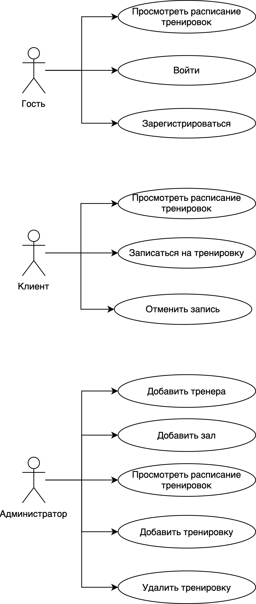
ER-диаграмма сущностей
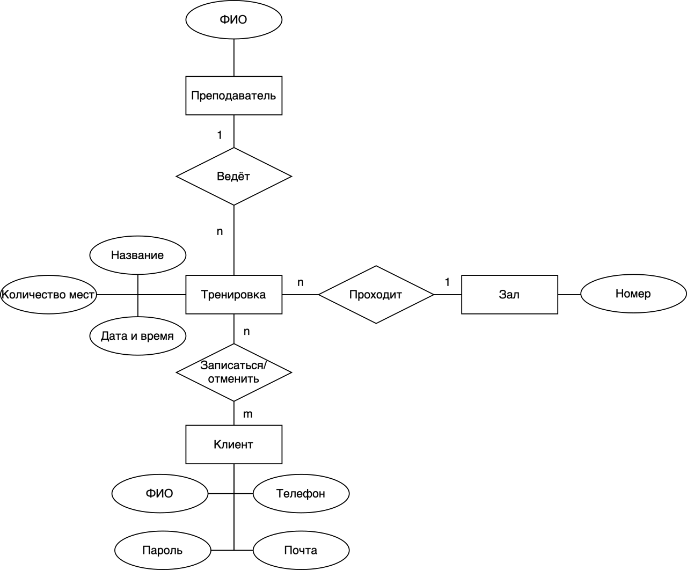
Диаграмма БД
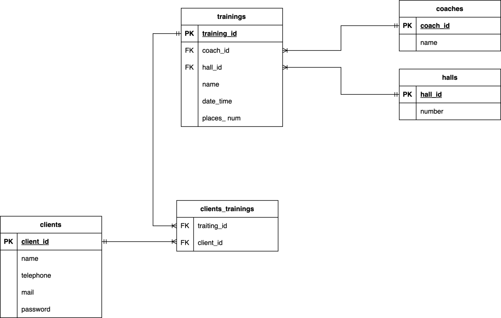
Пользовательские сценарии
- Для регистрации необходимо ввести номер телефона, ФИО, возраст, пол и придумать пароль.
- Для авторизации необходимо ввести номер телефона и пароль.
- Для просмотра расписания пользователь может быть не авторизирован, однако для записи или написания отзыва авторизация необходима.
- Для записи на тренировку необходимо выбрать тренировку с нужным направлением и датой, однако чтобы записаться, необходимо иметь действующий абонемент.
- Для добавления новой тренировки необходимо указать дату, время, зал и тренера, однако если зал или тренер заняты в данное время, то тренировку добавить не получится.
Основные бизнес-процессы
- Запись на тренировку (проверяется, что клиент ещё не записан в данное время, а также наличие свободных мест).
- Добавление тренировки (выбор тренера, времени, в которое он свободен, свободного зала и количества мест на тренировки).
Формализация ключевых бизнес-процессов
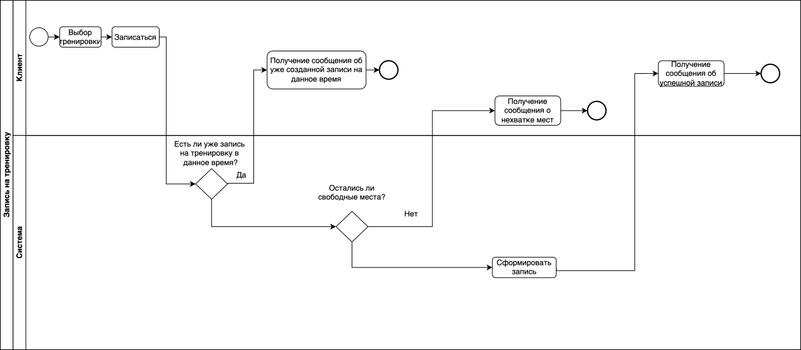
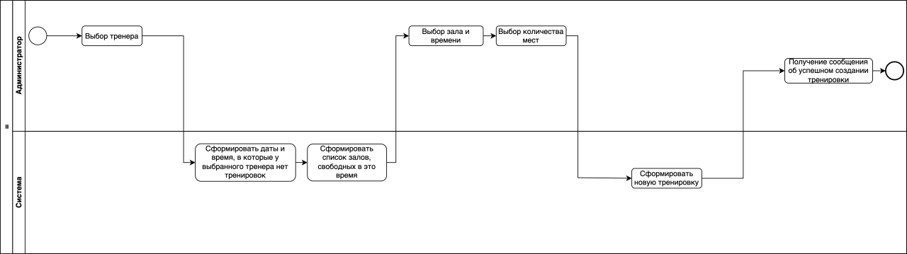
Верхнеуровневое разбиение на компоненты
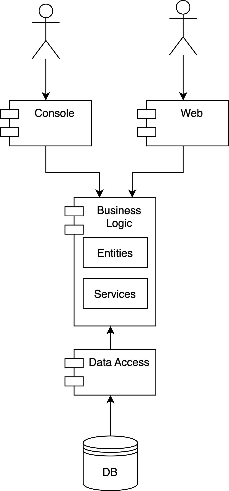
UML диаграммы классов
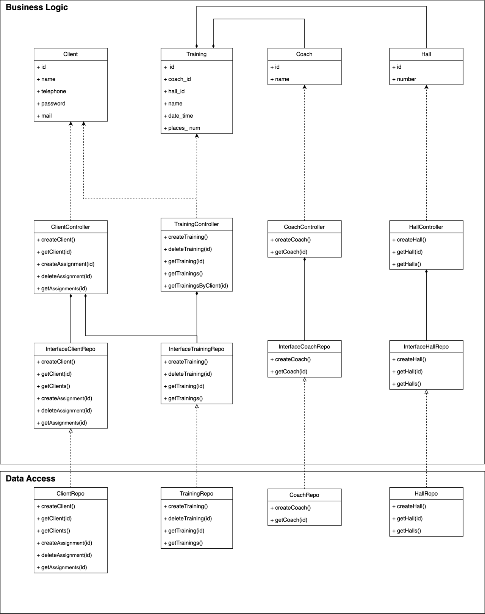
Экраны приложения
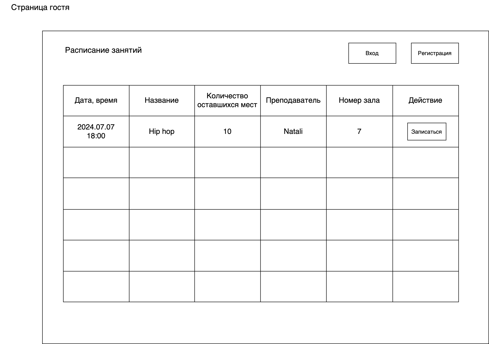
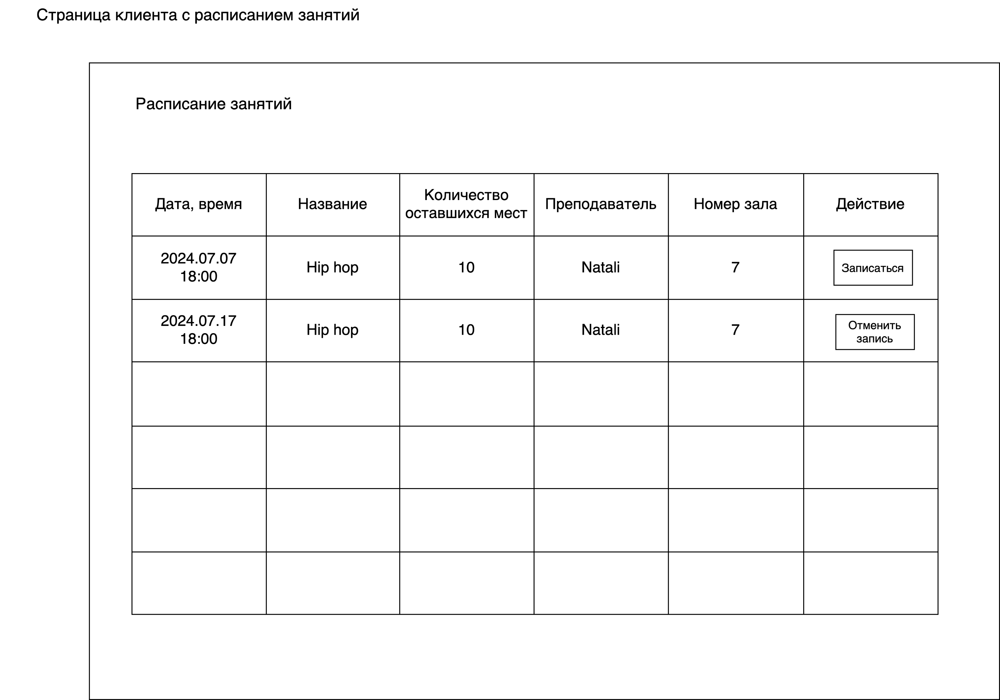
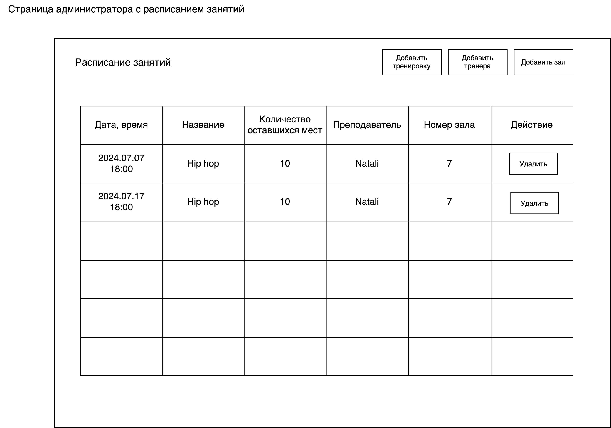
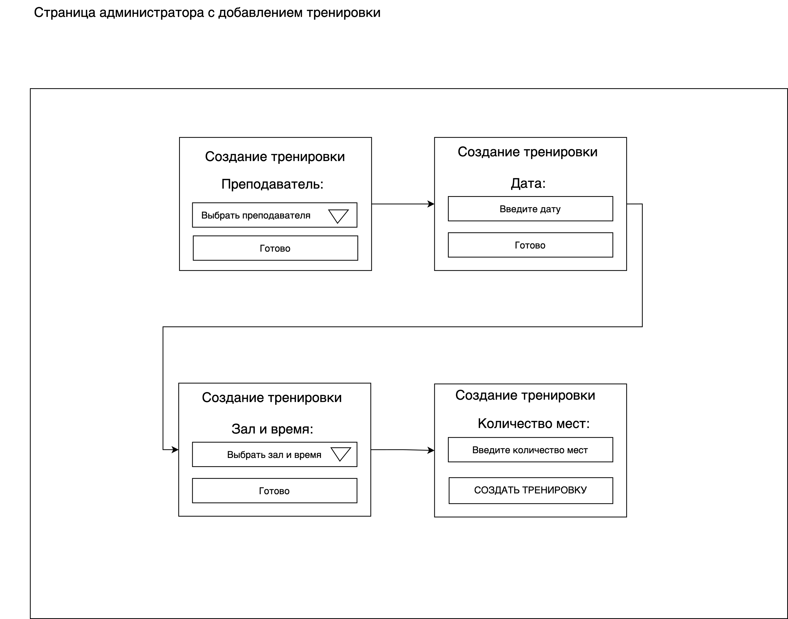
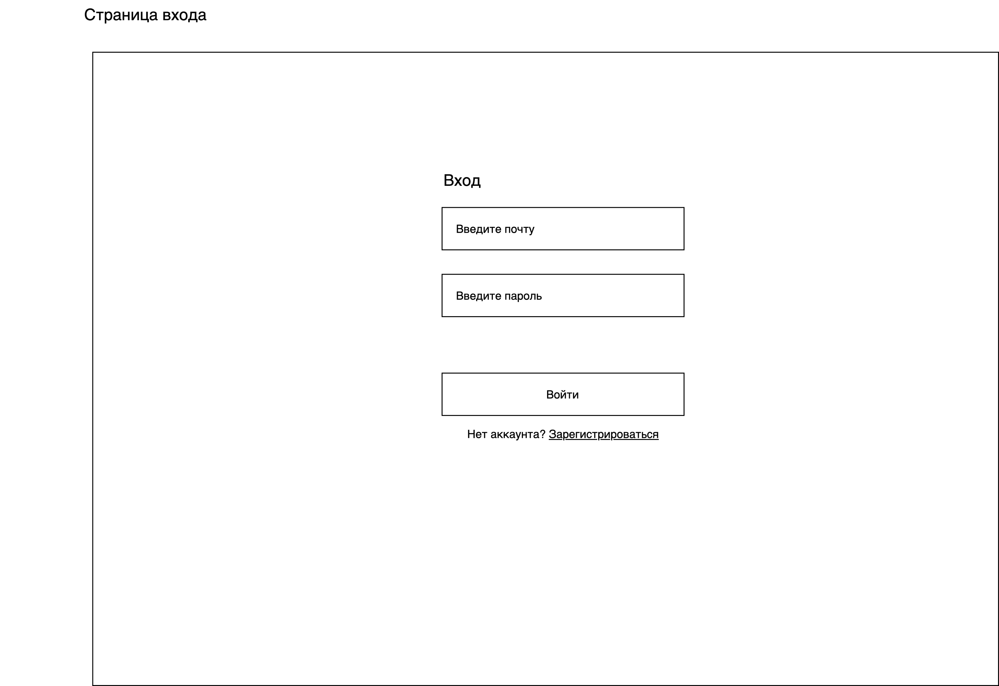
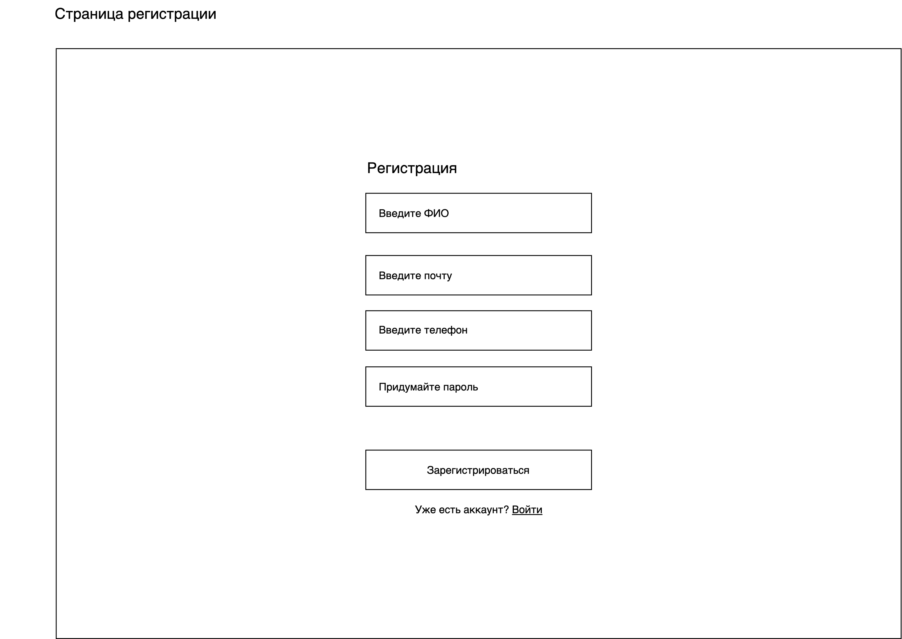